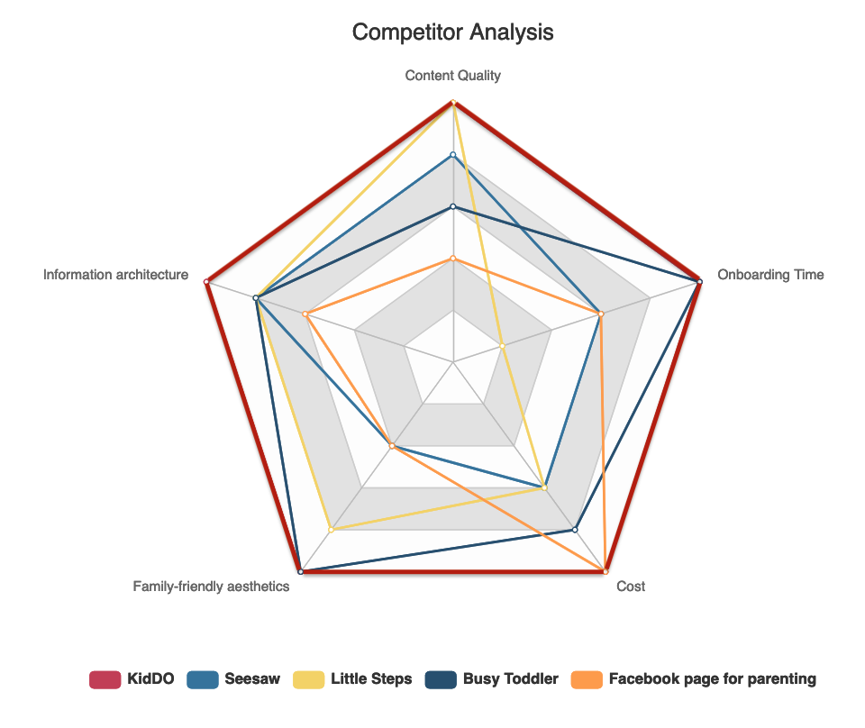

Acticity app for Homeparenting
Problem Domain
During home isolation, parents have been increasingly stressed out about how to spend quality time with their young kids while keeping them motivated to learn.
How might we offer educational and fun resources for kids during quarantine given that parents have difficulty finding quality online resources effectively?
Percent of Parents
Have Difficulty balancing work from home and parenting ( 4/5 on 1-5 difficulty scale )
Percent of Parents
Kids get bored frequently ( 4/5 on 1- 5 frequency scale )
Percent of Parents
Kids lack of motivation to learn from home
Out of 38 respondents
reported "No resource" when being asked what current resource they use to homeparent.
Mission Statement
We aspire to help parents with young kids ( elementary & below ) home-parenting during COVID-19 isolation by offering customizable and quality activities for educational and recreational purposes.
Comparative Advantage
Our team think there are 5 criteria that we value, and we compare them across other 4 strong competitors.
Together, KidDO’s comparative advantage formed a balanced Pentagon by acing all 5 criterias.

Onboarding Time
As KidDO iterate, we added onboarding pages to familiarize first time users. There is also continue as guest option to avoid login/registration steps.
Content Quality
Content is well-organized by home-parenting situated constraints and interests. It also has higher accessibility as we provide multimedia access to information, such as audio/video/text.
Information Architecture
Robust filtering system that allows customization as well as efficient content navigation.
Family-Friendly Aesthetics
Moodboard and style-guide heavily guided our family-friendly aesthetics.


High-Fi Screens &
User Flow
Our team adopted such iterative design process for our other key features as well, now let me walk you through them by demoing their key user interactions.

Onboarding & Login Page
Since users have limited capacities of working memory and setting the priorities, we decided to use a onboarding process as quick insight for parents who are first time users to get familiar and confident with the app, providing Greetings, essential information, and boost engagement within the first interaction with KidDO.
As shown here in the gif, the login also has an option to continue as guest without registration, making the onboarding more accessible.
SideNav & Activity Page
This Gif here introduces the homepage which updates parents with feeds of recommended activities. The kid-friendly sidebar is achieved through the large accessible icons in sketch style.
Moves on to activity page, it sorts activities by type into two main categories: “for fun” and “learn” which can then be further filtered using tags.

Activity Detail Page
The third key feature is activity detail and rating page. Parents are able to find important information such as time estimation to read, and multimedia instructions which includes audio and video options to help parents better focus on practicing the activity hands-free.
Once parent completes the instructions, they are able to mark the activity as “finished” and rate it with number of stars and descriptive tags. A finished activity would then be automatically sorted to the “done” list in bookmark page.
Bookmark Page & Filter
Bookmark page can be easily accessed from the sidebar navigation. Parents are able to see which activities they have already completed and which they still have to do.
They have the option to filter activities to cater to their personal need, such as time constraints, number of children, children's age range, and with/without parental guidance.
meet the team
Shout out to my teammates Garrett Crotty,Steven Lou, Kyu Young Eun, Jenson Jia who made this virtual design collaboration happened over zoom!